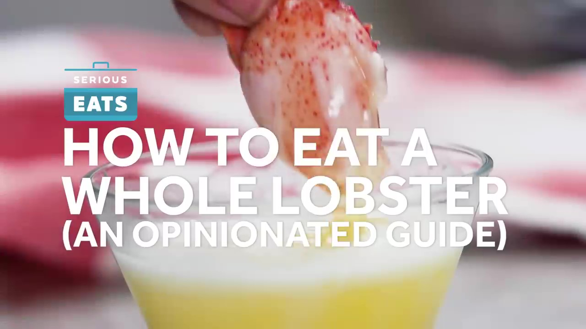
How to Shell and Eat a Whole Lobster
A food-focused instructional video with clear step-by-step editing, supporting footage, and natural pacing.
I edit YouTube videos, documentaries, reels, and short-form content with clean cuts, smooth pacing, clear audio, and engaging visuals.
A short selection of my video editing work, including YouTube videos, documentaries, and short-form content.
A selection of my video editing work across YouTube videos, documentaries, and reels.

A food-focused instructional video with clear step-by-step editing, supporting footage, and natural pacing.
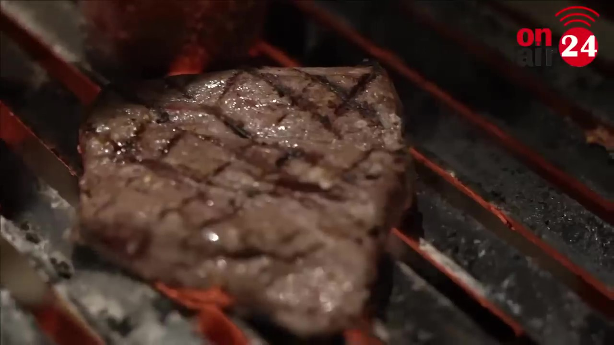
A food list video edited with engaging visuals, clean transitions, music, text, and steady pacing.
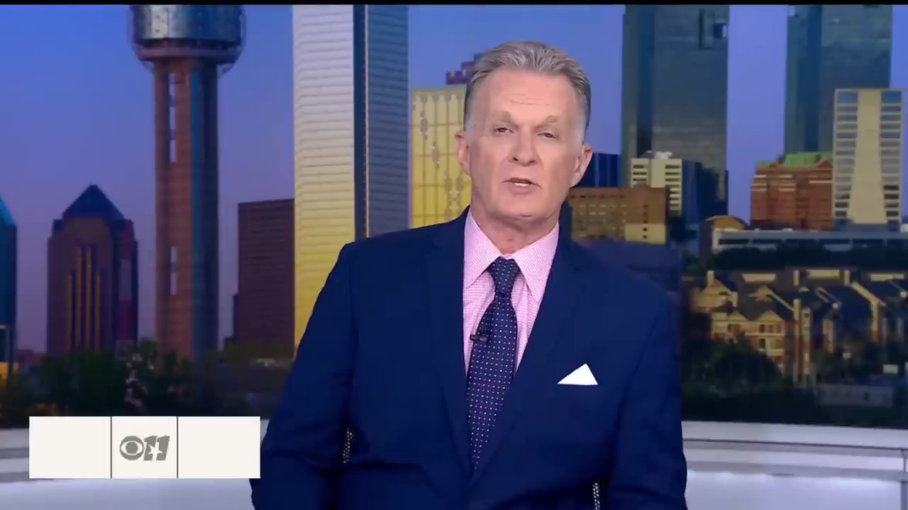
A comparison-style food video with structured sections, supporting visuals, text, and smooth transitions.
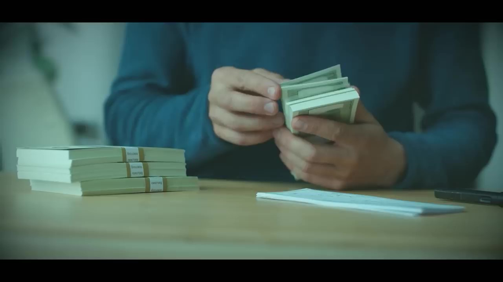
A research-based comparison video with clear organization, supporting footage, text, and engaging pacing.
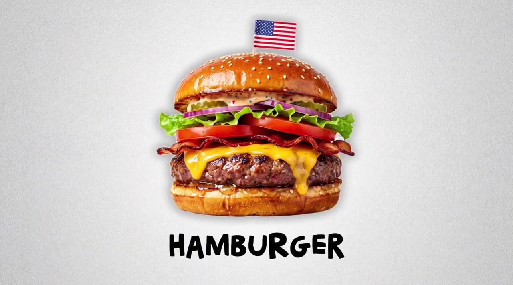
A research-based food documentary with clear storytelling, supporting visuals, narration, and smooth pacing.
A research-focused explainer edited with structured storytelling, supporting visuals, narration, and clear pacing.
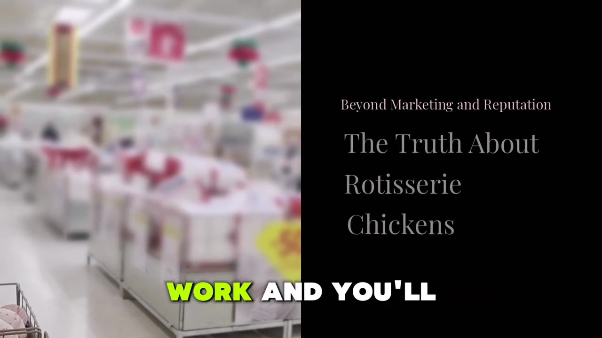
An investigation-style food video comparing products from different stores with clear structure and supporting footage.
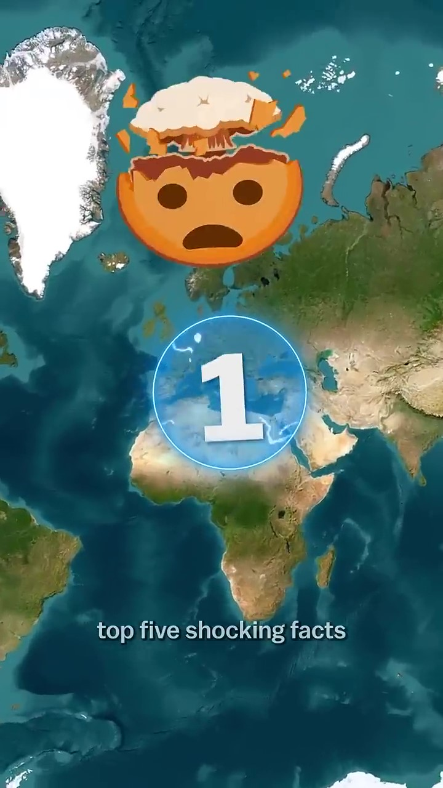
A fast-paced geography reel using quick cuts, text, visuals, and engaging pacing.
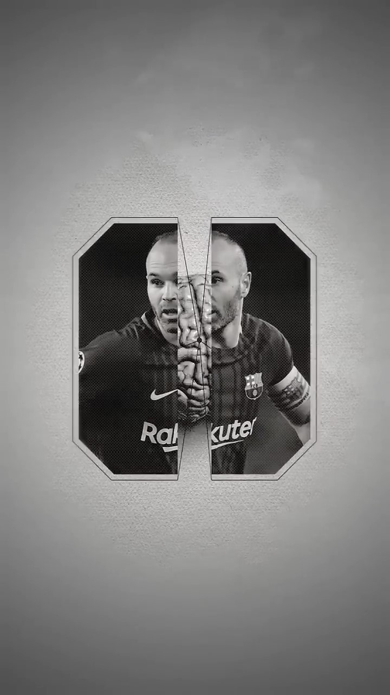
A short editing tutorial focused on clear steps, visual examples, text, and easy-to-follow pacing.
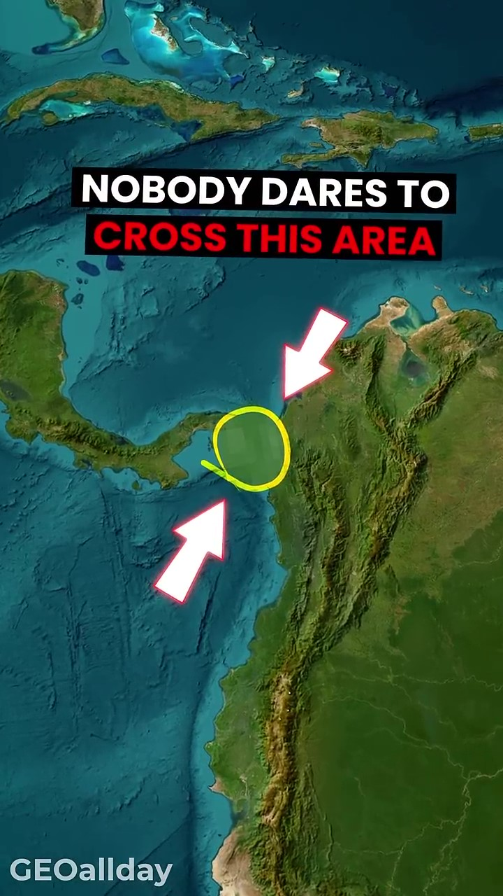
A short-form geography video built around strong visuals, text, quick cuts, and engaging storytelling.
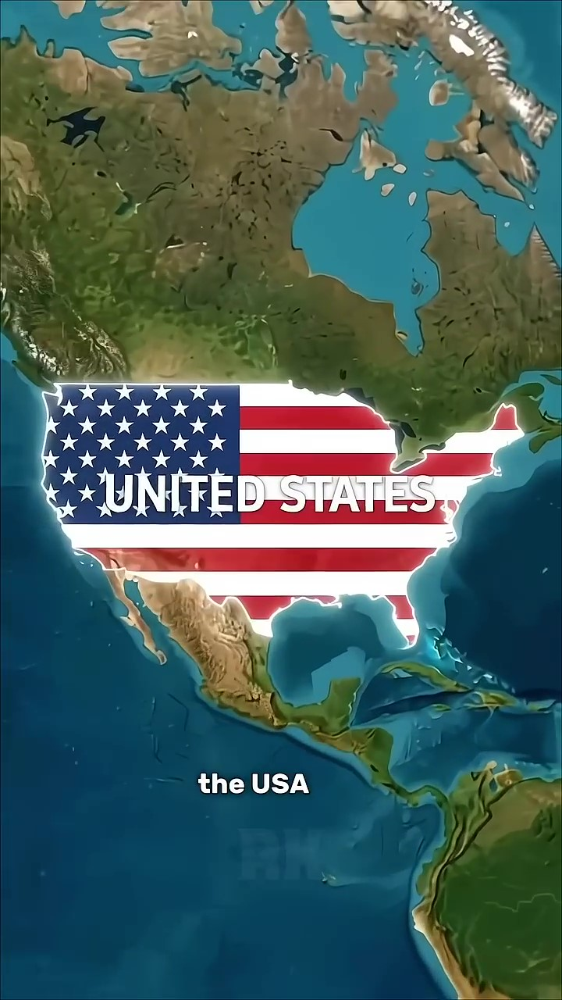
A short-form facts video using quick information, strong visuals, text, and engaging pacing.
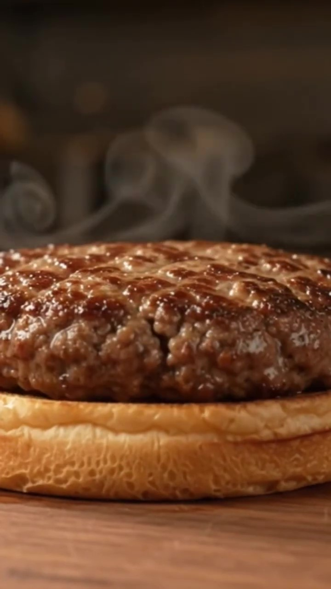
A short food reel using engaging visuals, text, music, and quick pacing to highlight an iconic American food.
Video editing tailored to the style, story, and pacing of each project.
Engaging YouTube videos with clean editing, good pacing, captions, supporting visuals, and balanced audio to keep the content clear and engaging.
Thoughtful documentary editing focused on clear storytelling, natural pacing, and meaningful moments.
Short-form vertical videos designed for Instagram, TikTok, and YouTube Shorts with engaging pacing and clean visuals.
A simple and thoughtful editing process focused on clear storytelling, strong pacing, and polished final videos.
I organize the footage around the main story, selecting the moments that help the video feel clear and engaging.
I focus on smooth pacing and well-timed cuts so the video feels natural and keeps viewers interested.
I balance dialogue, background music, and sound effects to create a clean and enjoyable listening experience.
I use clean and balanced color correction to keep footage consistent and give the final video a polished look.
I use simple, well-timed transitions that support the content without distracting from the story.
I use b-roll, text, music, and visual details to add context and make each video more engaging.

"Good editing is about knowing what to keep, what to remove, and how to make every moment feel natural."
I focus on creating clean, engaging videos with clear storytelling, smooth pacing, and well-balanced visuals and audio. Whether it’s a YouTube video, documentary, or short-form reel, I edit each project according to its style and purpose.
My goal is to keep the editing simple and effective. I pay attention to timing, music, captions, transitions, and supporting visuals so the final video feels polished without being overdone.
Let's discuss your next YouTube video, documentary, or reel. Share your footage and ideas, and I'll help turn them into a clean and engaging final video.